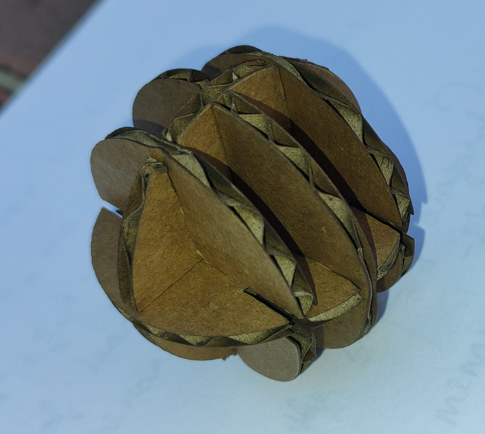
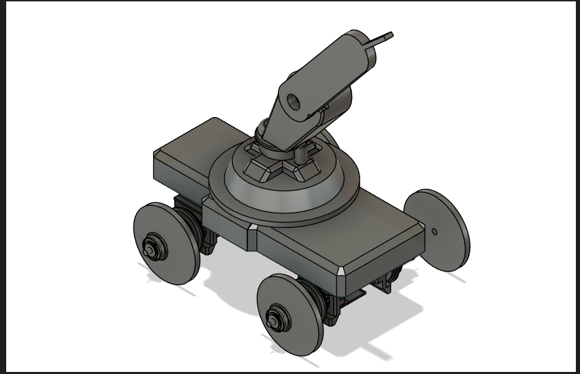
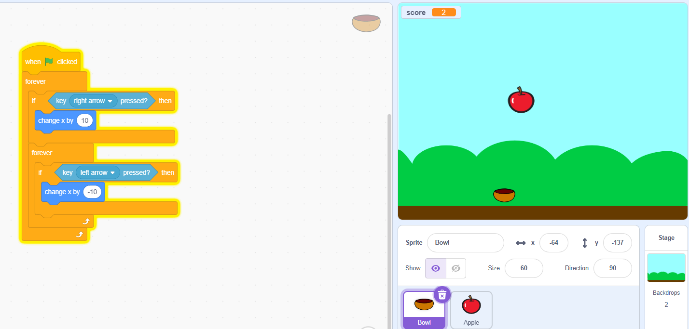
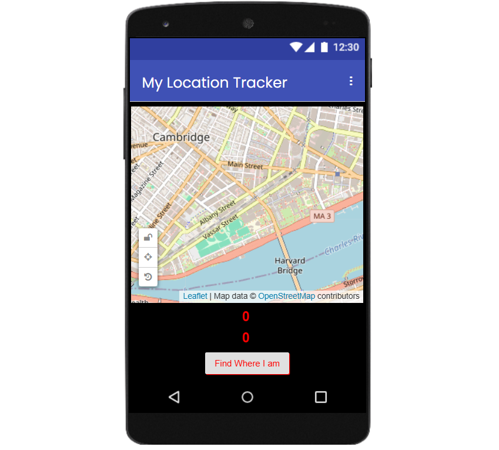
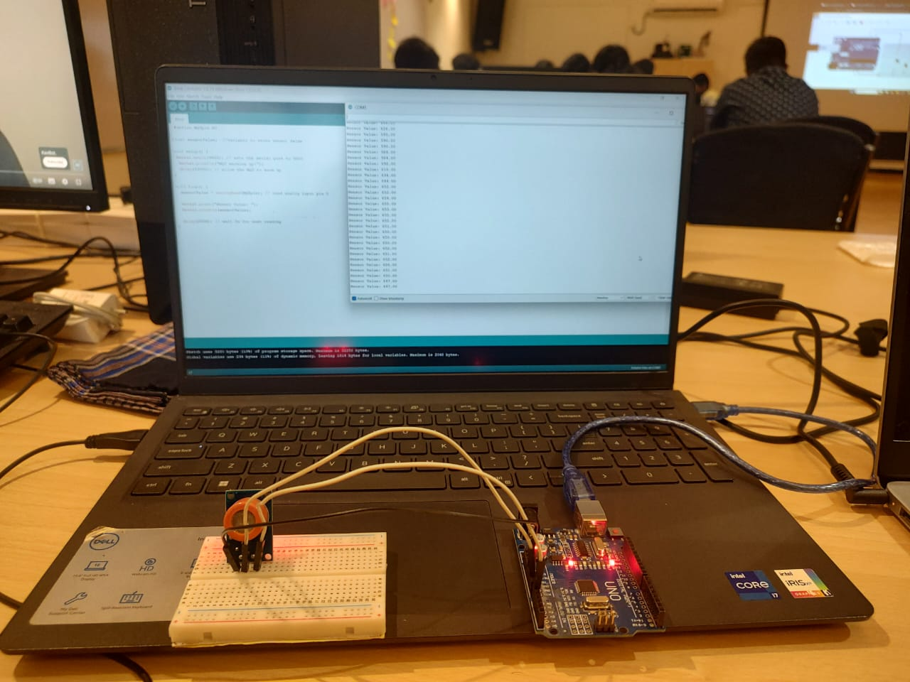
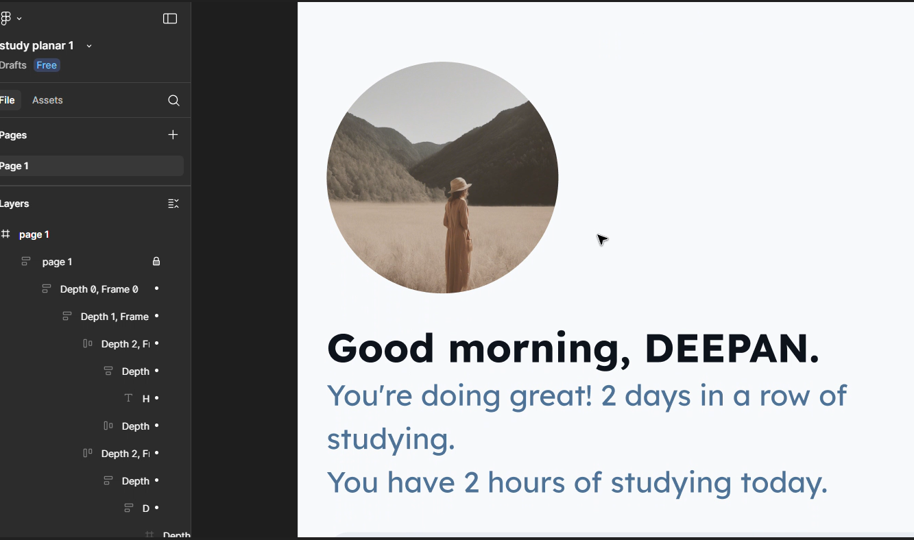

ProtoSem 3.3 Assignments
1. Laser Cutting
Designed a 3D interlocking sphere using Autodesk Fusion 360 then converted into DFX file and it cut from 2mm Cardboard using Laser cutting machine.
2. 3D Modeling
Created a 3D model of a robotic arm using Auto desk Fusion 360. Focused on part design, joint constraints, and Animated in Fusion 360 to stimulate its range of motion and functionallity .
3. Scratch Programming
Developed interactive animations using block-based programming in Scratch. Created a game of fruit catching.
4. MIT App Inventor
Designed basic Android applications that interact with UI elements, Blog based programing and created Location Finder .
5. Sensors and Embedded Systems
Interfaced with ESP8266 , Alcohol Sensor and Arduino using I2C and analog signals. Displayed data on serial monitor.
6. UI/UX Design
Used Figma to prototype a mobile application of study time table design focused on sustainability. Incorporated principles of accessibility, usability, and consistency.